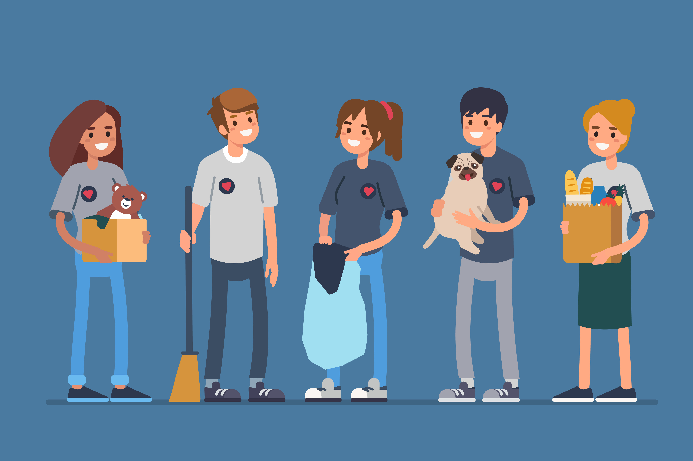
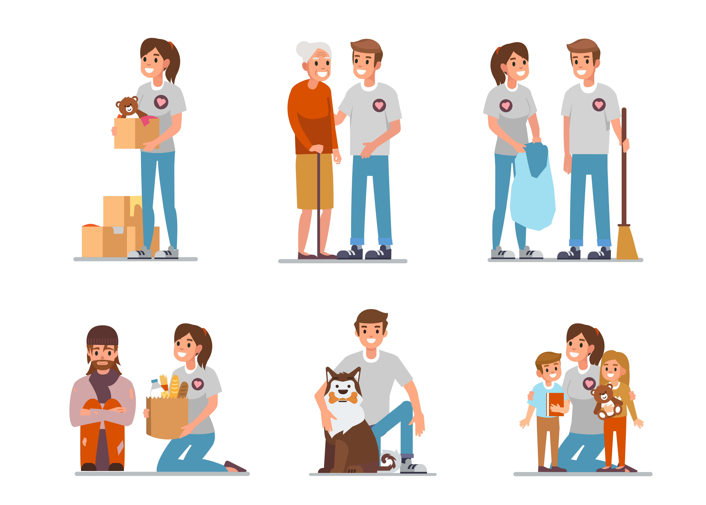
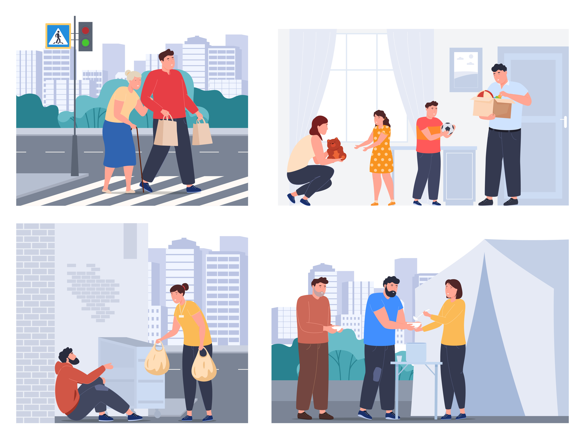
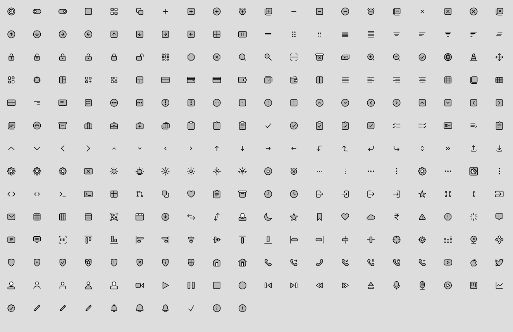

Our Image Selection
Overall, Open Doors was looking for a warm and inviting colours scheme. One that allowed individuals to feel calm and stability when they used the app

Image 1

Image 2

Image 3
Our Icon Selection
Here is our icon selection. Our goal is to keep our app as minimal and easy to use as possible, and we believe with these icons, our users will be able to utilize our app as soon as the first launch.
